Δ disclosure
+52 pp
Parameter count
Analisi empirica · senza compositi indefendibili
Dashboard densificata come il report precedente: disclosure, compute, prezzi, accordo tra benchmark, lag open-weights, uso documentato, SWE-bench e controlli calendario — con refusals espliciti dove i dati non supportano la domanda.
Δ disclosure
+52 pp
Parameter count
Crescita compute
0.54 log₁₀/anno
doubling ≈ 6.7 mesi
Lag open-weights
152 giorni
mediana Kaplan–Meier
Accordo benchmark
τ ≥ 0.58
min Kendall τ-b (coppie indipendenti)
API − consumer
-40.2 pp
Δ automazione (stesse occupation)
Refusals
8
claim rifiutati esplicitamente
Risultati che sopravvivono all'audit metodologico. I claim non supportati sono nel ledger refusals, non stimati.
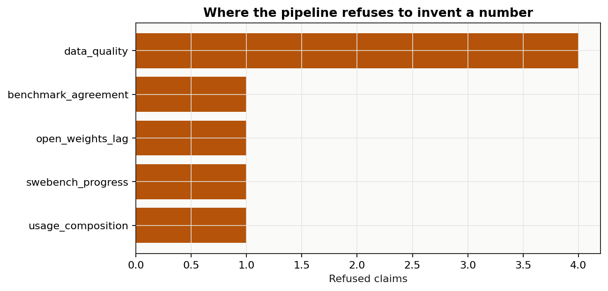
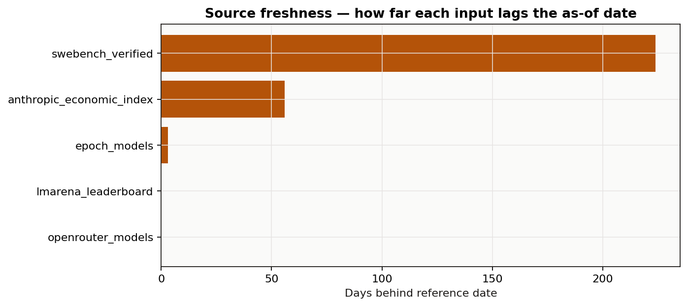
| source_id | check | severity | value | interpretation |
|---|---|---|---|---|
| anthropic_economic_index | panel_length | blocking | 2 | The release covers 2 monthly period(s) (2026-04-01 to 2026-05-01). Cross-sectional comparisons are supported; trends in usage composition are not. |
| epoch_models | curation_right_censoring | blocking | 2025 | Model counts fall monotonically from 2025 to 2026, which is consistent with curation lag and also with a genuine slowdown. The two cannot be distinguished from this dataset, so release-count trends are not published for these years. |
| swebench_verified | leaderboard_staleness | blocking | 224 | The most recent public submission is dated 2025-12-15, 224 days before the reference date. The leaderboard supports historical statements only; it cannot describe current agent capability. |
| anthropic_economic_index | single_vendor_coverage | constraining | 1 | Usage composition is measured for one vendor's products. It describes who uses that product and how, and carries no information about the workforce or about employment outcomes. |
| epoch_models | field_disclosure_rate | constraining | 0.3914 | Training compute (FLOP) is disclosed for 39.1% of models. Any statistic conditioned on this field describes disclosing models, which are not a random sample. |
| epoch_models | field_disclosure_rate | constraining | 0.3933 | Training dataset size is disclosed for 39.3% of models. Any statistic conditioned on this field describes disclosing models, which are not a random sample. |
| epoch_models | field_disclosure_rate | constraining | 0.3317 | Training hardware is disclosed for 33.2% of models. Any statistic conditioned on this field describes disclosing models, which are not a random sample. |
| epoch_models | unmapped_accessibility_values | constraining | 0.2444 | 24.4% of models have no usable accessibility class, either because the field is empty or because the accessibility statement and the open-weights flag disagree. These rows are excluded from open-versus-closed comparisons rather than assigned to the closed side. |
| lmarena_leaderboard | duplicate_leaderboard_rows | constraining | 0.0094 | 17,855 rows (0.94%) share a model, category and publication date with at least one other row carrying a different rating. They are combined by inverse-variance weighting with the between-replicate spread added to the standard error. Taking a maximum instead would bias affected models upward by tens of rating points. |
| lmarena_leaderboard | rating_methodology_breaks | constraining | 4 | The rating system changed on 2024-01-09 (Elo to Bradley-Terry), 2025-05-16 (style control by default) and 2025-07-23 (frequency re-weighting). Trends are estimated within a single regime; a slope spanning a break would partly measure the methodology change. |
| openrouter_models | benchmark_index_coverage | constraining | 0.3138 | A vendor-published quality index exists for 31.4% of listed models. Price-versus-quality statements describe that subset, which skews toward prominent models. |
| openrouter_models | prompt_length_price_tiers | constraining | 44 | 44 of 341 listed models charge more above a prompt-length threshold. Reading only the base rate understates long-context cost, so price tables report the base rate and the rate at 64,000 prompt tokens separately. |
| swebench_verified | scaffold_model_entanglement | constraining | 61 | A submission measures an agent scaffold together with a model. Directory names are author-chosen, so the underlying model cannot always be identified. Scores are attributed to systems, never to models alone. |
| epoch_models | field_disclosure_rate | informational | 0.6492 | Parameter count is disclosed for 64.9% of models. Any statistic conditioned on this field describes disclosing models, which are not a random sample. |
| epoch_models | field_disclosure_rate | informational | 0.7556 | Accessibility statement is disclosed for 75.6% of models. Any statistic conditioned on this field describes disclosing models, which are not a random sample. |
| lmarena_leaderboard | unclassifiable_licence | informational | 0.0581 | 5.8% of arena rows carry a licence string this project cannot classify as open or proprietary. They are excluded from the open-versus-closed frontier rather than assumed closed. |
| openrouter_models | announced_retirements | informational | 7 | 7 listings carry an expiration date. This is direct evidence of the catalogue turnover that makes the cross-section unusable as a price history. |
| openrouter_models | missing_output_price | informational | 5 | Some listings expose no usable completion price, typically non-text models. They are excluded from price statistics. |
| analysis | claim | reason | unblocked_by |
|---|---|---|---|
| benchmark_agreement | A single composite score ranking models by overall capability. | Public benchmarks do not agree strongly enough on model ordering to be treated as noisy measurements of one construct. The weakest measured pair (lmarena_text_rating versus lmarena_webdev_rating) has Kendall tau 0.58 on 40 shared models, so a weighted average of them would mostly encode the choice of weights. | Evidence that the benchmarks load on a common factor, for example a factor analysis on a much wider model-by-benchmark matrix with published per-model scores. |
| data_quality | A single number for how far behind open-weight models are, across all capabilities. | The gap is measured per arena and per category and varies widely between them. One pooled number would hide that variation and depend on which categories were included. | Nothing in this data. The quantity is category-specific by construction. |
| data_quality | Current state-of-the-art coding-agent capability on SWE-bench Verified. | The public submission directory has received no entry for 224 days, so its top score is a lower bound from an earlier period, not a current measurement. | New submissions to the public SWE-bench Verified experiments directory. |
| data_quality | How listed prices for a given capability level changed over time. | The catalogue is a cross-section of currently listed models. Withdrawn models are absent and no historical price field is published, so any 'price over time' series built from it would be a survivorship-biased cohort comparison. | Repeated snapshots of this catalogue captured over time, or a source that publishes dated historical prices. |
| data_quality | Number of notable AI models released per year, including the most recent years. | Epoch AI model counts decline monotonically from 2025 onward. Curation lag and a real slowdown produce identical shapes in this dataset. | A dataset revision that marks completeness per year, or waiting until the affected years stop growing between snapshots. |
| open_weights_lag | The date on which open-weight models will match the closed frontier. | Extrapolating the measured gap trend to zero assumes the trend is linear, that the rating scale is stable, and that no methodology change intervenes. The trend is estimated on serially correlated weekly publications inside a single regime, which supports a direction but not a crossing date. | A model of the gap process validated out of sample against past regime changes. |
| swebench_progress | Extrapolated future SWE-bench Verified resolve rates. | The public leaderboard has received no entry for 224 days. A trend fitted to a frozen series projects silence, not progress. | New public submissions. |
| usage_composition | Trend in the automation share of observed AI usage. | The release covers 2 monthly period(s). A trend needs a longer panel; with this little history any slope is indistinguishable from noise. | A longer run of monthly releases from the same surface. |
Trasparenza dei record Epoch — non un indice di capability.

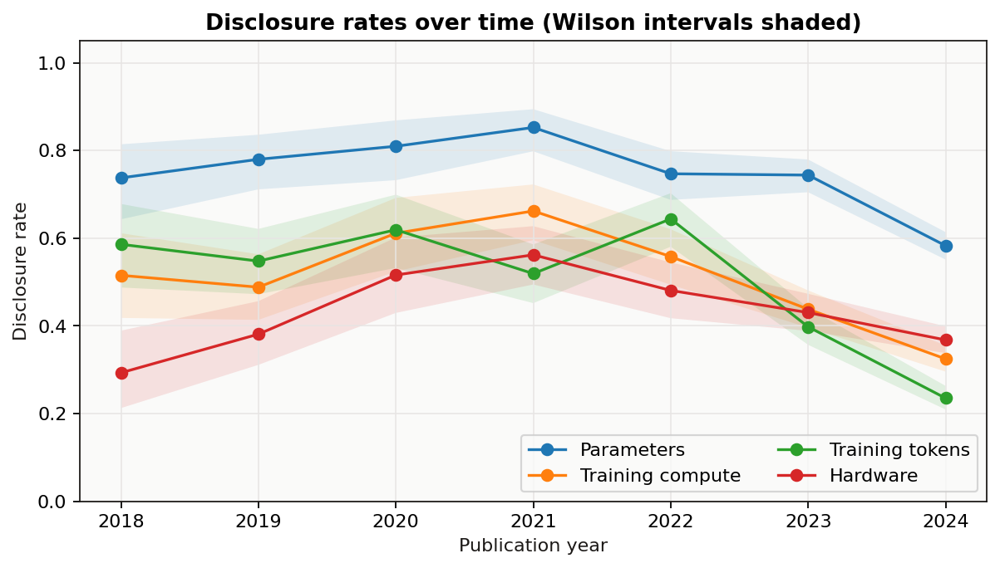
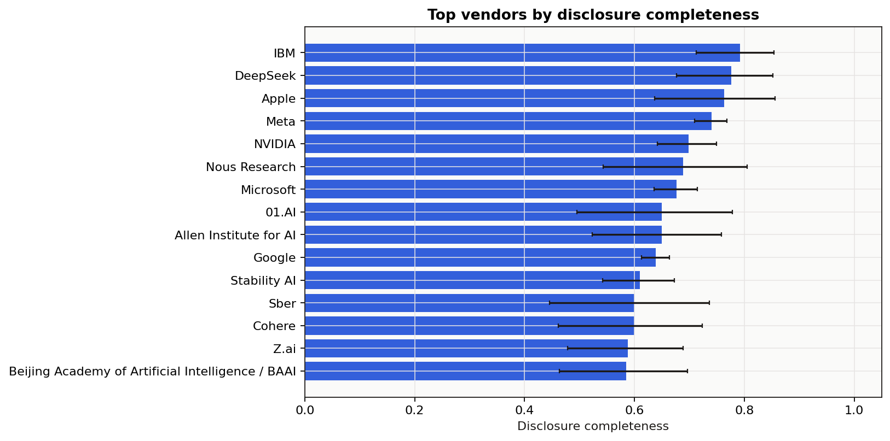
| field | field_label | open_weight_models | closed_weight_models | open_disclosure_rate | closed_disclosure_rate | difference | ci_low | ci_high | p_value | estimator | q_value_bh | significant_after_bh | multiple_comparison_correction | confound |
|---|---|---|---|---|---|---|---|---|---|---|---|---|---|---|
| parameters | Parameter count | 984 | 297 | 0.8608 | 0.3367 | 0.5241 | 0.4654 | 0.5814 | 0.0001 | two_sample_bootstrap_difference_of_proportions | 0.0001 | True | benjamini_hochberg over 4 tested fields | Open-weight releases skew academic and closed releases skew commercial, so part of this difference is publication culture rather than a policy choice about openness. The data contain no instrument that separates the two. |
| training_compute_flop | Training compute (FLOP) | 984 | 297 | 0.564 | 0.2121 | 0.3519 | 0.2946 | 0.4079 | 0.0001 | two_sample_bootstrap_difference_of_proportions | 0.0001 | True | benjamini_hochberg over 4 tested fields | Open-weight releases skew academic and closed releases skew commercial, so part of this difference is publication culture rather than a policy choice about openness. The data contain no instrument that separates the two. |
| training_tokens | Training dataset size | 984 | 297 | 0.4919 | 0.1515 | 0.3404 | 0.2871 | 0.3904 | 0.0001 | two_sample_bootstrap_difference_of_proportions | 0.0001 | True | benjamini_hochberg over 4 tested fields | Open-weight releases skew academic and closed releases skew commercial, so part of this difference is publication culture rather than a policy choice about openness. The data contain no instrument that separates the two. |
| training_hardware | Training hardware | 984 | 297 | 0.5224 | 0.1987 | 0.3237 | 0.268 | 0.3773 | 0.0001 | two_sample_bootstrap_difference_of_proportions | 0.0001 | True | benjamini_hochberg over 4 tested fields | Open-weight releases skew academic and closed releases skew commercial, so part of this difference is publication culture rather than a policy choice about openness. The data contain no instrument that separates the two. |
Trend in log₁₀ FLOP con sensibilità e backtest. Nessuna proiezione di score misti.
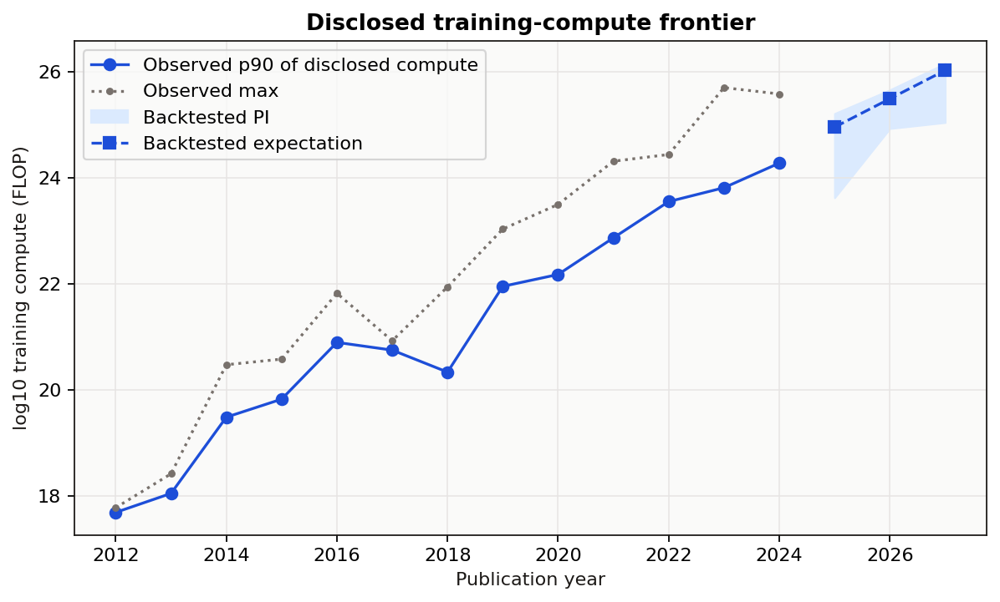
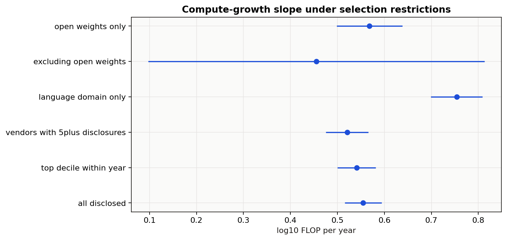
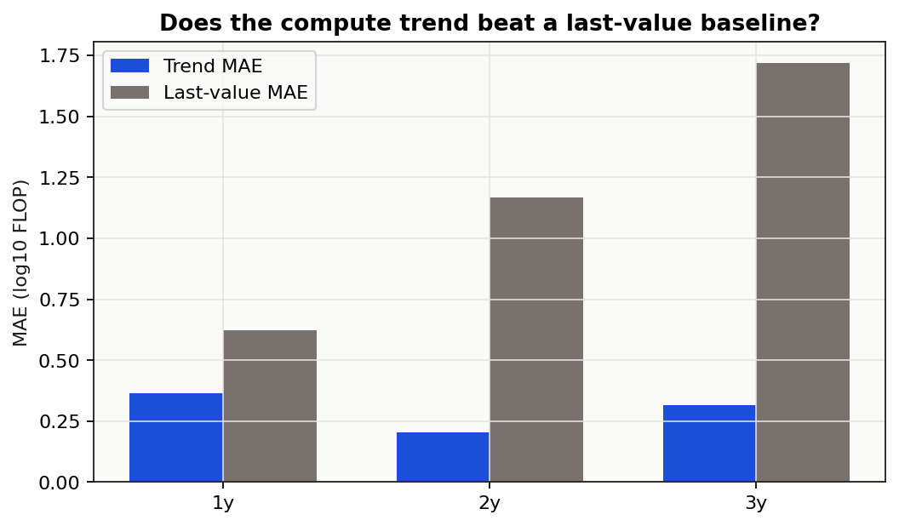
| specification | estimator | n | log10_flop_per_year | ci_low | ci_high | doubling_time_months | doubling_time_months_low | doubling_time_months_high | r_squared | description |
|---|---|---|---|---|---|---|---|---|---|---|
| frontier_p90_by_year | ols_hc3 | 13 | 0.5357 | 0.4743 | 0.597 | 6.744 | 6.051 | 7.616 | 0.9628 | Annual 90th percentile of log10 disclosed training compute. |
| frontier_p90_by_year | theil_sen | 13 | 0.5177 | 0.4641 | 0.6024 | 6.977 | 5.997 | 7.784 | Annual 90th percentile of log10 disclosed training compute. | |
| frontier_max_by_year | ols_hc3 | 13 | 0.6359 | 0.5281 | 0.7437 | 5.681 | 4.857 | 6.841 | 0.9581 | Annual maximum of log10 disclosed training compute. |
| frontier_max_by_year | theil_sen | 13 | 0.6396 | 0.5117 | 0.7282 | 5.647 | 4.961 | 7.059 | Annual maximum of log10 disclosed training compute. | |
| all_disclosed_models | ols_hc3 | 1124 | 0.5548 | 0.5155 | 0.594 | 6.511 | 6.081 | 7.007 | 0.389 | Every model with disclosed compute, one observation per model. |
| all_disclosed_models | theil_sen | 1124 | 0.5741 | 0.5306 | 0.6176 | 6.292 | 5.849 | 6.809 | Every model with disclosed compute, one observation per model. | |
| epoch_frontier_flagged_models | ols_hc3 | 74 | 0.6528 | 0.6217 | 0.6839 | 5.534 | 5.282 | 5.81 | 0.9573 | Models the source curator flags as frontier systems. |
| epoch_frontier_flagged_models | theil_sen | 74 | 0.662 | 0.629 | 0.6939 | 5.457 | 5.206 | 5.743 | Models the source curator flags as frontier systems. |
| restriction | n | log10_flop_per_year | ci_low | ci_high | doubling_time_months | relative_change_vs_baseline | status | rationale |
|---|---|---|---|---|---|---|---|---|
| all_disclosed | 1124 | 0.5548 | 0.5155 | 0.594 | 6.511 | 0 | estimated | No restriction. |
| top_decile_within_year | 117 | 0.5409 | 0.5002 | 0.5815 | 6.679 | -0.02508 | estimated | Only the largest 10% of disclosed models each year: tests whether the trend is driven by the growing tail of small models rather than by the frontier. |
| vendors_with_5plus_disclosures | 873 | 0.5207 | 0.4753 | 0.5661 | 6.937 | -0.06143 | estimated | Only organisations that disclose repeatedly: removes one-off disclosures whose propensity may correlate with model size. |
| language_domain_only | 707 | 0.7539 | 0.699 | 0.8088 | 4.792 | 0.3589 | estimated | Language models only: removes composition change as domains enter the dataset. |
| excluding_open_weights | 65 | 0.4552 | 0.09714 | 0.8133 | 7.936 | -0.1795 | estimated | Closed-weight models only: the subset whose disclosure is most likely selective. |
| open_weights_only | 564 | 0.5683 | 0.4984 | 0.6382 | 6.357 | 0.02433 | estimated | Open-weight models only: the subset with the most complete disclosure. |
Non è una serie storica: è la struttura del catalogo al pull.
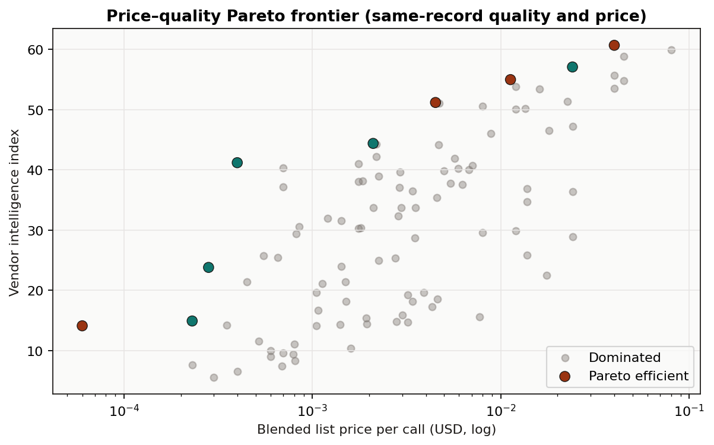

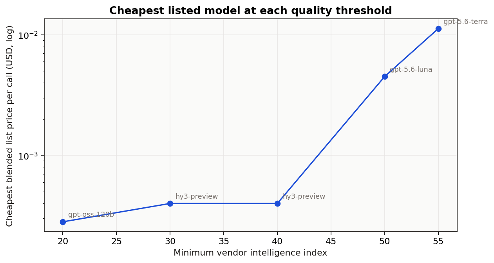
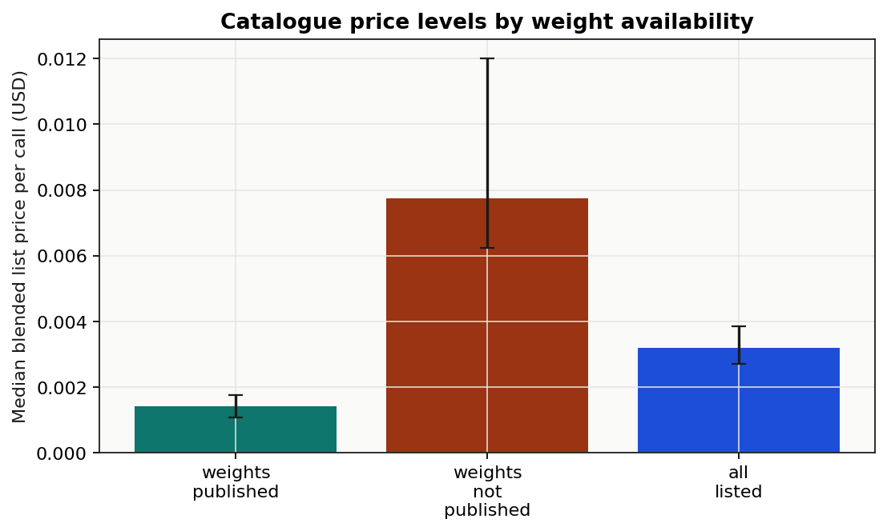
| quality_threshold | eligible_models | cheapest_model_id | cheapest_model_vendor | cheapest_model_weights | cheapest_model_quality | cheapest_blended_usd_per_call | premium_vs_cheapest | highest_quality_model_id | status |
|---|---|---|---|---|---|---|---|---|---|
| 20 | 69 | openai/gpt-oss-120b | OpenAI | open_weights | 23.8 | 0.000281 | 142.3 | anthropic/claude-opus-5 | estimated |
| 30 | 53 | tencent/hy3-preview | Tencent | open_weights | 41.2 | 0.000399 | 100.3 | anthropic/claude-opus-5 | estimated |
| 40 | 30 | tencent/hy3-preview | Tencent | open_weights | 41.2 | 0.000399 | 100.3 | anthropic/claude-opus-5 | estimated |
| 50 | 16 | openai/gpt-5.6-luna | OpenAI | closed_weights | 51.2 | 0.0045 | 8.889 | anthropic/claude-opus-5 | estimated |
| 55 | 6 | openai/gpt-5.6-terra | OpenAI | closed_weights | 55 | 0.01125 | 3.556 | anthropic/claude-opus-5 | estimated |
| band_low | quality_band | models | quality_min | quality_max | cheapest_usd_per_call | dearest_usd_per_call | max_min_price_ratio | ratio_ci_low | ratio_ci_high | cheapest_model_id | dearest_model_id | estimator | caveat |
|---|---|---|---|---|---|---|---|---|---|---|---|---|---|
| 5 | 5-10 | 8 | 5.5 | 9.6 | 0.00023 | 0.000806 | 3.504 | 1.975 | 3.504 | meta-llama/llama-3.1-8b-instruct | qwen/qwen3-8b | percentile_bootstrap_of_max_min_ratio | A max/min ratio is a function of extremes, so its bootstrap interval is wide and asymmetric. Read the ratio as an order of magnitude, not a precise figure. |
| 10 | 10-15 | 12 | 10 | 14.9 | 6e-05 | 0.0032 | 53.33 | 6.154 | 53.33 | inclusionai/ling-2.6-flash | mistralai/mistral-medium-3.1 | percentile_bootstrap_of_max_min_ratio | A max/min ratio is a function of extremes, so its bootstrap interval is wide and asymmetric. Read the ratio as an order of magnitude, not a precise figure. |
| 15 | 15-20 | 11 | 15.4 | 19.6 | 0.00105 | 0.0077 | 7.333 | 3.046 | 7.333 | mistralai/mistral-small-2603 | openai/o3-mini-high | percentile_bootstrap_of_max_min_ratio | A max/min ratio is a function of extremes, so its bootstrap interval is wide and asymmetric. Read the ratio as an order of magnitude, not a precise figure. |
| 20 | 20-25 | 6 | 21.1 | 24 | 0.000281 | 0.0175 | 62.28 | 3.156 | 62.28 | openai/gpt-oss-120b | cohere/command-a | percentile_bootstrap_of_max_min_ratio | A max/min ratio is a function of extremes, so its bootstrap interval is wide and asymmetric. Read the ratio as an order of magnitude, not a precise figure. |
| 25 | 25-30 | 10 | 25 | 29.9 | 0.00055 | 0.024 | 43.64 | 10.67 | 43.64 | google/gemma-4-26b-a4b-it | anthropic/claude-sonnet-4 | percentile_bootstrap_of_max_min_ratio | A max/min ratio is a function of extremes, so its bootstrap interval is wide and asymmetric. Read the ratio as an order of magnitude, not a precise figure. |
| 30 | 30-35 | 10 | 30.3 | 34.7 | 0.00085 | 0.01375 | 16.18 | 2.444 | 16.18 | inclusionai/ring-2.6-1t | openai/gpt-5 | percentile_bootstrap_of_max_min_ratio | A max/min ratio is a function of extremes, so its bootstrap interval is wide and asymmetric. Read the ratio as an order of magnitude, not a precise figure. |
| 35 | 35-40 | 13 | 35.4 | 39.8 | 0.0007 | 0.024 | 34.29 | 3.571 | 34.29 | xiaomi/mimo-v2.5 | anthropic/claude-sonnet-4.5 | percentile_bootstrap_of_max_min_ratio | A max/min ratio is a function of extremes, so its bootstrap interval is wide and asymmetric. Read the ratio as an order of magnitude, not a precise figure. |
| 40 | 40-45 | 11 | 40 | 44.4 | 0.000399 | 0.00705 | 17.67 | 3.357 | 17.67 | tencent/hy3-preview | thinkingmachines/inkling | percentile_bootstrap_of_max_min_ratio | A max/min ratio is a function of extremes, so its bootstrap interval is wide and asymmetric. Read the ratio as an order of magnitude, not a precise figure. |
| 50 | 50-55 | 10 | 50.1 | 54.8 | 0.0045 | 0.045 | 10 | 3.556 | 10 | openai/gpt-5.6-luna | openai/gpt-5.5 | percentile_bootstrap_of_max_min_ratio | A max/min ratio is a function of extremes, so its bootstrap interval is wide and asymmetric. Read the ratio as an order of magnitude, not a precise figure. |
| 55 | 55-60 | 5 | 55 | 59.9 | 0.01125 | 0.08 | 7.111 | 1.778 | 7.111 | openai/gpt-5.6-terra | anthropic/claude-fable-5 | percentile_bootstrap_of_max_min_ratio | A max/min ratio is a function of extremes, so its bootstrap interval is wide and asymmetric. Read the ratio as an order of magnitude, not a precise figure. |
Premessa di ogni composito: i segnali misurano la stessa cosa. Qui si testa.
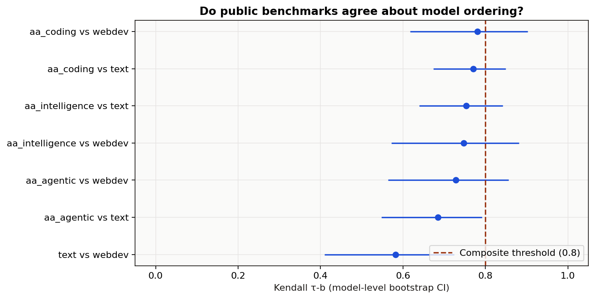
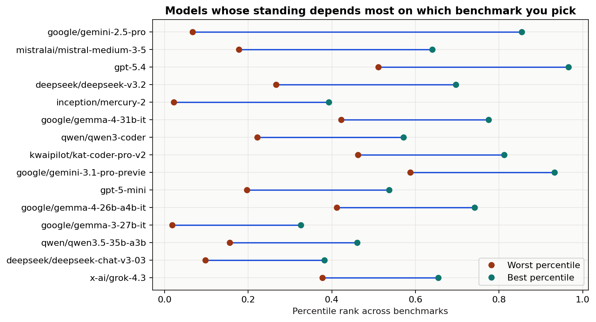
| pairs_tested | pairs_between_independent_benchmarks | minimum_tau_ci_low | median_tau | weakest_pair | weakest_pair_tau | threshold_for_composite | composite_score_defensible | verdict | threshold_rationale |
|---|---|---|---|---|---|---|---|---|---|
| 10 | 7 | 0.4097 | 0.7471 | lmarena_text_rating vs lmarena_webdev_rating | 0.5821 | 0.8 | False | A single composite capability score is not defensible on this evidence. Benchmarks are reported separately, and no weighted average of them is published. | Declared before estimation. tau > 0.8 corresponds to at least 90% of model pairs ordered identically, which is the minimum for a single number to be usable without knowing which benchmark generated it. |
| benchmark_a | benchmark_b | benchmark_a_scale | benchmark_b_scale | common_models | kendall_tau_b | tau_ci_low | tau_ci_high | spearman_rho | share_of_pairs_ordered_alike | top_10_overlap | estimator | both_vendor_composites |
|---|---|---|---|---|---|---|---|---|---|---|---|---|
| lmarena_text_rating | lmarena_webdev_rating | LMArena text arena Bradley-Terry rating (overall category) | LMArena code arena Bradley-Terry rating (overall category) | 40 | 0.5821 | 0.4097 | 0.724 | 0.7599 | 0.791 | 0.7 | kendall_tau_b_with_model_level_paired_bootstrap | False |
| aa_agentic_index | lmarena_text_rating | Vendor composite index (Artificial Analysis agentic) | LMArena text arena Bradley-Terry rating (overall category) | 47 | 0.6849 | 0.5482 | 0.7913 | 0.8589 | 0.8424 | 0.8 | kendall_tau_b_with_model_level_paired_bootstrap | False |
| aa_agentic_index | lmarena_webdev_rating | Vendor composite index (Artificial Analysis agentic) | LMArena code arena Bradley-Terry rating (overall category) | 30 | 0.7287 | 0.5635 | 0.8568 | 0.8848 | 0.8644 | 0.8 | kendall_tau_b_with_model_level_paired_bootstrap | False |
| aa_intelligence_index | lmarena_webdev_rating | Vendor composite index (Artificial Analysis intelligence) | LMArena code arena Bradley-Terry rating (overall category) | 30 | 0.7471 | 0.5721 | 0.8815 | 0.8861 | 0.8736 | 0.8 | kendall_tau_b_with_model_level_paired_bootstrap | False |
| aa_intelligence_index | lmarena_text_rating | Vendor composite index (Artificial Analysis intelligence) | LMArena text arena Bradley-Terry rating (overall category) | 47 | 0.7534 | 0.64 | 0.8417 | 0.9125 | 0.8767 | 0.9 | kendall_tau_b_with_model_level_paired_bootstrap | False |
| aa_coding_index | lmarena_text_rating | Vendor composite index (Artificial Analysis coding) | LMArena text arena Bradley-Terry rating (overall category) | 51 | 0.771 | 0.6736 | 0.8492 | 0.9218 | 0.8855 | 1 | kendall_tau_b_with_model_level_paired_bootstrap | False |
| aa_coding_index | lmarena_webdev_rating | Vendor composite index (Artificial Analysis coding) | LMArena code arena Bradley-Terry rating (overall category) | 31 | 0.7806 | 0.6178 | 0.9031 | 0.9149 | 0.8903 | 0.8 | kendall_tau_b_with_model_level_paired_bootstrap | False |
| aa_coding_index | aa_agentic_index | Vendor composite index (Artificial Analysis coding) | Vendor composite index (Artificial Analysis agentic) | 108 | 0.8392 | 0.7905 | 0.8806 | 0.9561 | 0.9196 | 0.9 | kendall_tau_b_with_model_level_paired_bootstrap | True |
| aa_intelligence_index | aa_agentic_index | Vendor composite index (Artificial Analysis intelligence) | Vendor composite index (Artificial Analysis agentic) | 107 | 0.8883 | 0.8563 | 0.9169 | 0.9797 | 0.9442 | 0.9 | kendall_tau_b_with_model_level_paired_bootstrap | True |
| aa_intelligence_index | aa_coding_index | Vendor composite index (Artificial Analysis intelligence) | Vendor composite index (Artificial Analysis coding) | 107 | 0.9025 | 0.8674 | 0.9323 | 0.9816 | 0.9513 | 1 | kendall_tau_b_with_model_level_paired_bootstrap | True |
Gap e catching-up dentro un singolo regime di rating; KM con censoring.

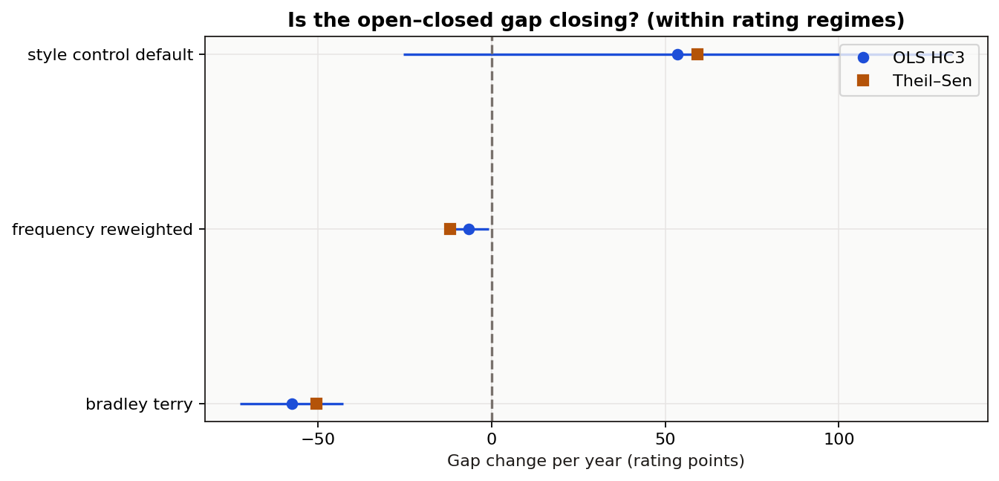
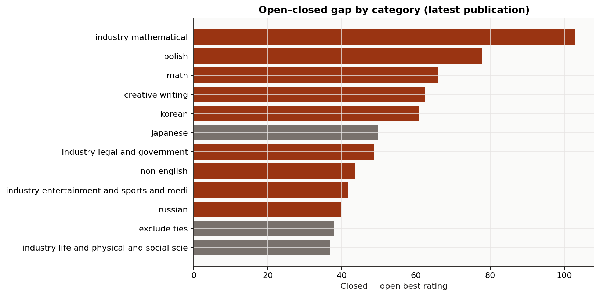
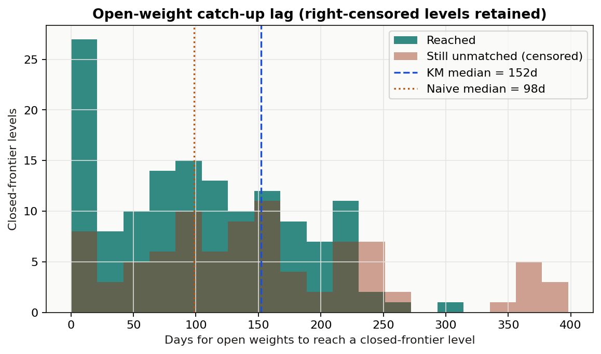
| methodology_regime | leaderboards | window_start | window_end | mean_gap_rating | gap_change_per_year_ols | ci_low | ci_high | gap_change_per_year_theil_sen | theil_sen_ci_low | theil_sen_ci_high | r_squared | estimator | serial_correlation_note |
|---|---|---|---|---|---|---|---|---|---|---|---|---|---|
| bradley_terry | 102 | 2024-01-09 | 2025-05-11 | 55.19 | -57.65 | -72.43 | -42.88 | -50.49 | -66.05 | -41.32 | 0.4331 | ols_hc3_and_theil_sen_on_within_regime_dates | Consecutive leaderboards share most of their vote history, so observations are strongly serially correlated and these intervals are too narrow. Read the sign and rough magnitude, not the endpoints. |
| bradley_terry_frequency_reweighted | 102 | 2025-07-25 | 2026-07-27 | 40.19 | -6.579 | -12.37 | -0.7831 | -12 | -20.12 | -6.549 | 0.03343 | ols_hc3_and_theil_sen_on_within_regime_dates | Consecutive leaderboards share most of their vote history, so observations are strongly serially correlated and these intervals are too narrow. Read the sign and rough magnitude, not the endpoints. |
| bradley_terry_style_control_default | 14 | 2025-05-19 | 2025-07-17 | 40.39 | 53.54 | -25.49 | 132.6 | 59.23 | -29.16 | 92.65 | 0.03716 | ols_hc3_and_theil_sen_on_within_regime_dates | Consecutive leaderboards share most of their vote history, so observations are strongly serially correlated and these intervals are too narrow. Read the sign and rough magnitude, not the endpoints. |
| levels_tracked | levels_reached | levels_still_unmatched | share_right_censored | kaplan_meier_median_lag_days | follow_up_days | naive_median_of_completed_lags_days | naive_understates_by_days | estimator | interpretation |
|---|---|---|---|---|---|---|---|---|---|
| 229 | 140 | 89 | 0.3886 | 152 | 398 | 98.5 | 53.5 | kaplan_meier_median_with_right_censoring | Kaplan-Meier median days for the open-weight frontier to reach a historical closed-frontier level. Censored levels contribute as 'not yet reached'. A NaN median means more than half the levels tracked are still unmatched within the follow-up window, so the honest answer is 'longer than the follow-up'. |
| arena | category | publish_date | open_models | closed_models | open_best_model | open_best_rating | closed_best_model | closed_best_rating | gap_rating | gap_se | gap_ci_low | gap_ci_high | gap_distinguishable_from_zero |
|---|---|---|---|---|---|---|---|---|---|---|---|---|---|
| text | industry_mathematical | 2026-07-27 | 182 | 161 | mimo-v2.5-pro | 1482 | claude-opus-5-high | 1585 | 102.9 | 19.92 | 63.89 | 142 | True |
| text | polish | 2026-07-27 | 89 | 118 | mimo-v2.5-pro | 1461 | gemini-3.5-flash-high | 1539 | 77.86 | 21.53 | 35.66 | 120.1 | True |
| text | math | 2026-07-27 | 187 | 164 | inkling | 1478 | claude-opus-5-high | 1544 | 65.91 | 25.36 | 16.2 | 115.6 | True |
| text | creative_writing | 2026-07-27 | 191 | 169 | glm-5.1 | 1449 | claude-opus-5-max | 1511 | 62.37 | 16.6 | 29.83 | 94.9 | True |
| text | korean | 2026-07-27 | 109 | 136 | mimo-v2.5-pro | 1429 | claude-fable-5 | 1490 | 60.78 | 22.17 | 17.32 | 104.2 | True |
| text | japanese | 2026-07-27 | 107 | 128 | glm-5.2-max | 1466 | claude-fable-5 | 1516 | 49.79 | 29.61 | -8.238 | 107.8 | False |
| text | industry_legal_and_government | 2026-07-27 | 173 | 162 | mimo-v2.5-pro | 1486 | claude-opus-5-high | 1535 | 48.63 | 14.89 | 19.44 | 77.82 | True |
| text | non_english | 2026-07-27 | 193 | 169 | glm-5.1 | 1445 | claude-opus-5-max | 1488 | 43.5 | 19.34 | 5.604 | 81.4 | True |
| text | industry_entertainment_and_sports_and_media | 2026-07-27 | 191 | 169 | glm-5.1 | 1438 | claude-opus-4-6-thinking | 1480 | 41.7 | 13.89 | 14.47 | 68.93 | True |
| text | russian | 2026-07-27 | 163 | 164 | glm-5.1 | 1464 | claude-opus-5-high | 1504 | 39.86 | 13.48 | 13.44 | 66.29 | True |
| text | exclude_ties | 2026-07-27 | 193 | 169 | mimo-v2.5-pro | 1463 | claude-opus-5-max | 1501 | 37.77 | 19.46 | -0.3676 | 75.92 | False |
| text | industry_life_and_physical_and_social_science | 2026-07-27 | 191 | 169 | hy3 | 1496 | claude-opus-5-max | 1533 | 36.95 | 19.22 | -0.724 | 74.62 | False |
| text | expert | 2026-07-27 | 153 | 161 | mimo-v2.5-pro | 1504 | claude-opus-5-high | 1539 | 34.76 | 26.6 | -17.38 | 86.9 | False |
| text | instruction_following | 2026-07-27 | 193 | 169 | mimo-v2.5-pro | 1470 | claude-opus-4-6-thinking | 1504 | 34.41 | 17.21 | 0.6741 | 68.15 | True |
| text | industry_business_and_management_and_financial_operations | 2026-07-27 | 186 | 169 | mimo-v2.5-pro | 1471 | claude-opus-5-high | 1504 | 33.28 | 14.91 | 4.058 | 62.51 | True |
| text | industry_writing_and_literature_and_language | 2026-07-27 | 192 | 169 | glm-5.1 | 1453 | claude-fable-5 | 1484 | 31.5 | 16.79 | -1.402 | 64.4 | False |
| text | overall | 2026-07-27 | 193 | 169 | mimo-v2.5-pro | 1461 | claude-opus-5-max | 1491 | 30.87 | 15.11 | 1.254 | 60.49 | True |
| text | hard_prompts | 2026-07-27 | 193 | 169 | mimo-v2.5-pro | 1488 | claude-opus-5-high | 1519 | 30.79 | 14.79 | 1.805 | 59.78 | True |
| text | multi_turn | 2026-07-27 | 191 | 169 | glm-5.1 | 1476 | claude-opus-4-6-thinking | 1506 | 30.45 | 11.23 | 8.445 | 52.46 | True |
| text | longer_query | 2026-07-27 | 172 | 168 | mimo-v2.5-pro | 1478 | claude-opus-4-6-thinking | 1508 | 30.19 | 14.91 | 0.9641 | 59.41 | True |
Composizione di traffico documentato — non impatto sull'occupazione.
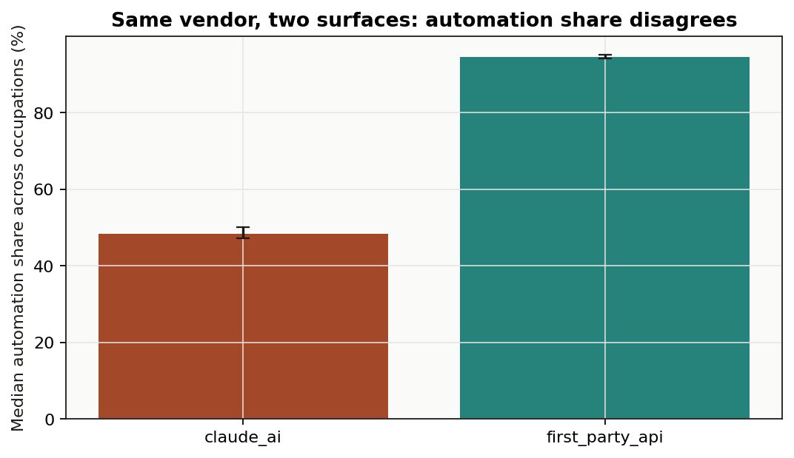
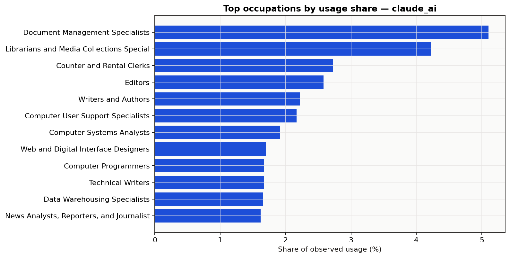
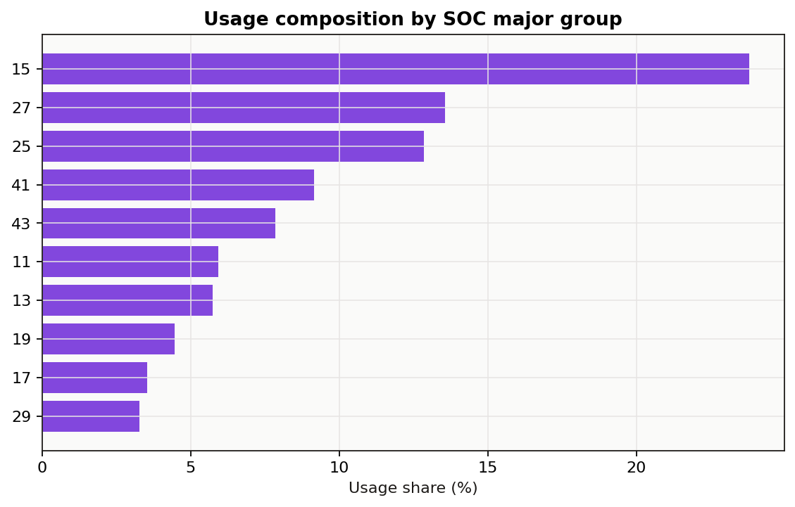
| surface | period_start | occupations | metric | median | ci_low | ci_high | estimator | scope |
|---|---|---|---|---|---|---|---|---|
| claude_ai | 2026-05-01 | 718 | automation_share_pct | 48.4 | 47.3 | 50.12 | percentile_bootstrap_of_median | Median across occupations with published values. Occupations are not employment-weighted: this describes the composition of the published occupation set, not of the workforce. |
| claude_ai | 2026-05-01 | 718 | augmentation_share_pct | 51.6 | 49.88 | 52.7 | percentile_bootstrap_of_median | Median across occupations with published values. Occupations are not employment-weighted: this describes the composition of the published occupation set, not of the workforce. |
| claude_ai | 2026-05-01 | 718 | ai_autonomy_mean | 2.74 | 2.72 | 2.75 | percentile_bootstrap_of_median | Median across occupations with published values. Occupations are not employment-weighted: this describes the composition of the published occupation set, not of the workforce. |
| first_party_api | 2026-05-01 | 690 | automation_share_pct | 94.63 | 94.12 | 95.21 | percentile_bootstrap_of_median | Median across occupations with published values. Occupations are not employment-weighted: this describes the composition of the published occupation set, not of the workforce. |
| first_party_api | 2026-05-01 | 690 | augmentation_share_pct | 5.37 | 4.79 | 5.88 | percentile_bootstrap_of_median | Median across occupations with published values. Occupations are not employment-weighted: this describes the composition of the published occupation set, not of the workforce. |
| first_party_api | 2026-05-01 | 690 | ai_autonomy_mean | 2.19 | 2.18 | 2.22 | percentile_bootstrap_of_median | Median across occupations with published values. Occupations are not employment-weighted: this describes the composition of the published occupation set, not of the workforce. |
| surface_a | surface_b | occupations_in_common | mean_automation_share_a | mean_automation_share_b | mean_difference_a_minus_b | ci_low | ci_high | spearman_rho_of_automation_shares | estimator | interpretation |
|---|---|---|---|---|---|---|---|---|---|---|
| claude_ai | first_party_api | 659 | 51.22 | 91.41 | -40.2 | -41.26 | -39.12 | 0.6371 | paired_bootstrap_of_mean_difference_over_occupations | Mean difference in automation share for the same occupations across the two surfaces. A difference whose interval excludes zero means the surfaces disagree about how automated usage is, even for the same jobs. Averaging them into one number would invent a consensus. |
Serie storica pubblica; lo score è scaffold+modello, non solo modello.
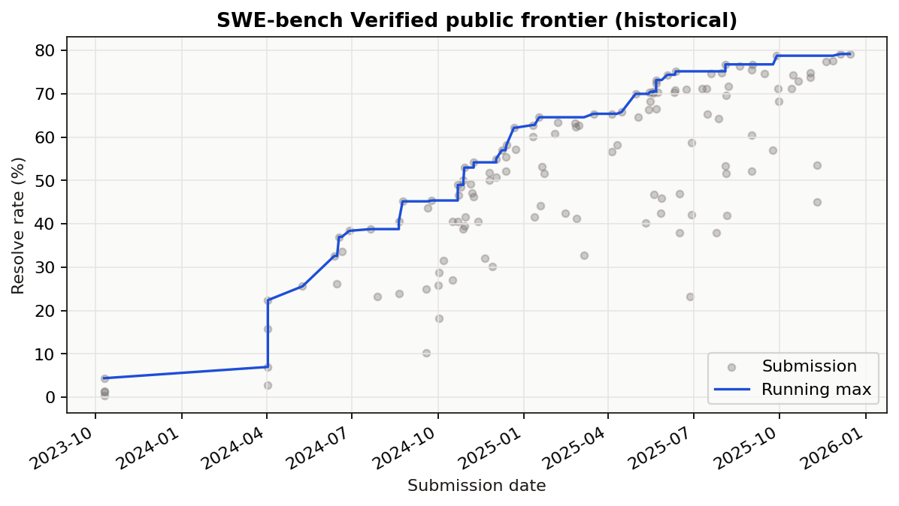
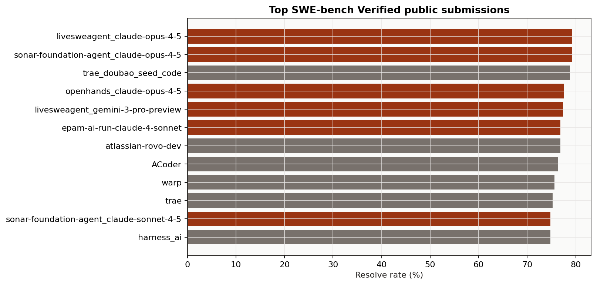
| submission | submission_date | system_label | model_tag | vendor | family | resolve_rate_pct | uses_open_weights_model | source_url |
|---|---|---|---|---|---|---|---|---|
| 20251215_livesweagent_claude-opus-4-5 | 2025-12-15 | livesweagent_claude-opus-4-5 | claude-opus-4-5 | Anthropic | Claude | 79.2 | False | https://github.com/SWE-bench/experiments/tree/main/evaluation/verified/20251215_livesweagent_claude-opus-4-5 |
| 20251205_sonar-foundation-agent_claude-opus-4-5 | 2025-12-05 | sonar-foundation-agent_claude-opus-4-5 | claude-opus-4-5 | Anthropic | Claude | 79.2 | False | https://github.com/SWE-bench/experiments/tree/main/evaluation/verified/20251205_sonar-foundation-agent_claude-opus-4-5 |
| 20250928_trae_doubao_seed_code | 2025-09-28 | trae_doubao_seed_code | trae_doubao_seed_code | ByteDance | Doubao | 78.8 | nan | https://github.com/SWE-bench/experiments/tree/main/evaluation/verified/20250928_trae_doubao_seed_code |
| 20251127_openhands_claude-opus-4-5 | 2025-11-27 | openhands_claude-opus-4-5 | claude-opus-4-5 | Anthropic | Claude | 77.6 | False | https://github.com/SWE-bench/experiments/tree/main/evaluation/verified/20251127_openhands_claude-opus-4-5 |
| 20251120_livesweagent_gemini-3-pro-preview | 2025-11-20 | livesweagent_gemini-3-pro-preview | gemini-3-pro-preview | Gemini | 77.4 | False | https://github.com/SWE-bench/experiments/tree/main/evaluation/verified/20251120_livesweagent_gemini-3-pro-preview | |
| 20250804_epam-ai-run-claude-4-sonnet | 2025-08-04 | epam-ai-run-claude-4-sonnet | claude-4-sonnet | Anthropic | Claude | 76.8 | False | https://github.com/SWE-bench/experiments/tree/main/evaluation/verified/20250804_epam-ai-run-claude-4-sonnet |
| 20250902_atlassian-rovo-dev | 2025-09-02 | atlassian-rovo-dev | atlassian-rovo-dev | Unknown | Other | 76.8 | nan | https://github.com/SWE-bench/experiments/tree/main/evaluation/verified/20250902_atlassian-rovo-dev |
| 20250819_ACoder | 2025-08-19 | ACoder | ACoder | Unknown | Other | 76.4 | nan | https://github.com/SWE-bench/experiments/tree/main/evaluation/verified/20250819_ACoder |
| 20250901_warp | 2025-09-01 | warp | warp | Unknown | Other | 75.6 | nan | https://github.com/SWE-bench/experiments/tree/main/evaluation/verified/20250901_warp |
| 20250612_trae | 2025-06-12 | trae | trae | Unknown | Other | 75.2 | nan | https://github.com/SWE-bench/experiments/tree/main/evaluation/verified/20250612_trae |
| 20251103_sonar-foundation-agent_claude-sonnet-4-5 | 2025-11-03 | sonar-foundation-agent_claude-sonnet-4-5 | claude-sonnet-4-5 | Anthropic | Claude | 74.8 | False | https://github.com/SWE-bench/experiments/tree/main/evaluation/verified/20251103_sonar-foundation-agent_claude-sonnet-4-5 |
| 20250731_harness_ai | 2025-07-31 | harness_ai | harness_ai | Unknown | Other | 74.8 | nan | https://github.com/SWE-bench/experiments/tree/main/evaluation/verified/20250731_harness_ai |
| 20250720_Lingxi-v1.5_claude-4-sonnet-20250514 | 2025-07-20 | Lingxi-v1.5_claude-4-sonnet-20250514 | Lingxi-v1.5_claude-4-sonnet-20250514 | Anthropic | Claude | 74.6 | False | https://github.com/SWE-bench/experiments/tree/main/evaluation/verified/20250720_Lingxi-v1.5_claude-4-sonnet-20250514 |
| 20250915_JoyCode | 2025-09-15 | JoyCode | JoyCode | Unknown | Other | 74.6 | nan | https://github.com/SWE-bench/experiments/tree/main/evaluation/verified/20250915_JoyCode |
| 20250603_Refact_Agent_claude-4-sonnet | 2025-06-03 | Refact_Agent_claude-4-sonnet | Agent_claude-4-sonnet | Anthropic | Claude | 74.4 | False | https://github.com/SWE-bench/experiments/tree/main/evaluation/verified/20250603_Refact_Agent_claude-4-sonnet |
| model_tag | submissions | distinct_system_labels | min_resolve_rate_pct | max_resolve_rate_pct | spread_pp | median_resolve_rate_pct | interpretation |
|---|---|---|---|---|---|---|---|
| claude-3-5-sonnet | 3 | 1 | 39.6 | 62.8 | 23.2 | 55.4 | Spread in resolve rate across submissions that name the same model. A large spread means the score is dominated by the agent scaffold, not by the model. |
| claude-opus-4-5 | 3 | 3 | 77.6 | 79.2 | 1.6 | 79.2 | Spread in resolve rate across submissions that name the same model. A large spread means the score is dominated by the agent scaffold, not by the model. |
Negative control: clustering di rilasci per weekday/mese/trimestre.

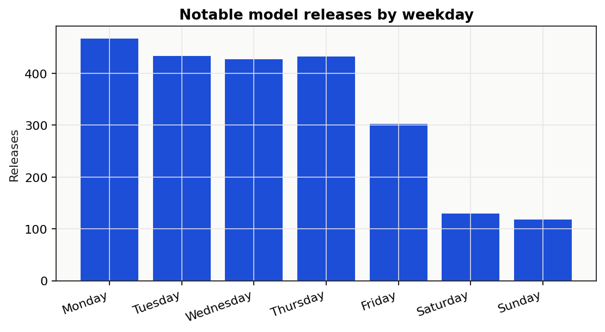
| feature | top_bucket | top_count | releases | share | null_categories | null_model | permutation_p_value | permutation_draws | q_value_bh | significant_after_bh | family_size | surviving_after_correction | interpretation |
|---|---|---|---|---|---|---|---|---|---|---|---|---|---|
| weekday | Monday | 467 | 2308 | 0.2023 | 7 | year-preserving uniform random dates | 0.0002 | 5000 | 0.0003 | True | 3 | 3 | 3 of 3 calendar features survive Benjamini-Hochberg correction against a year-preserving random-date null. That is consistent with real release scheduling (weekdays, conference seasons) rather than a multiple-testing artifact. It is not evidence of anything beyond vendor calendars. |
| month | September | 268 | 2308 | 0.1161 | 12 | year-preserving uniform random dates | 0.0002 | 5000 | 0.0003 | True | 3 | 3 | 3 of 3 calendar features survive Benjamini-Hochberg correction against a year-preserving random-date null. That is consistent with real release scheduling (weekdays, conference seasons) rather than a multiple-testing artifact. It is not evidence of anything beyond vendor calendars. |
| quarter | Q4 | 641 | 2308 | 0.2777 | 4 | year-preserving uniform random dates | 0.008198 | 5000 | 0.008198 | True | 3 | 3 | 3 of 3 calendar features survive Benjamini-Hochberg correction against a year-preserving random-date null. That is consistent with real release scheduling (weekdays, conference seasons) rather than a multiple-testing artifact. It is not evidence of anything beyond vendor calendars. |
2026-07-27
= orizzonte della fonte più fresca.Audit v1: docs/audit_of_previous_version.md · Markdown: frontier_signals.md